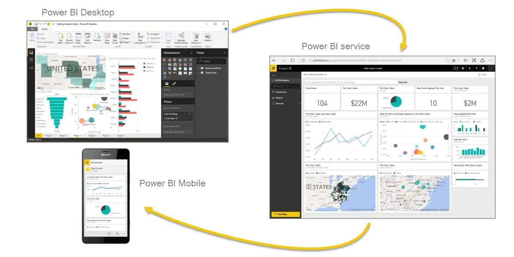
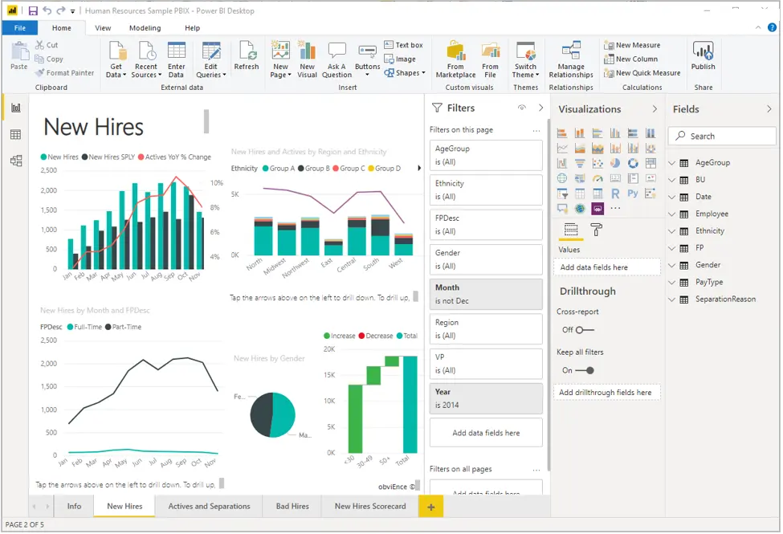
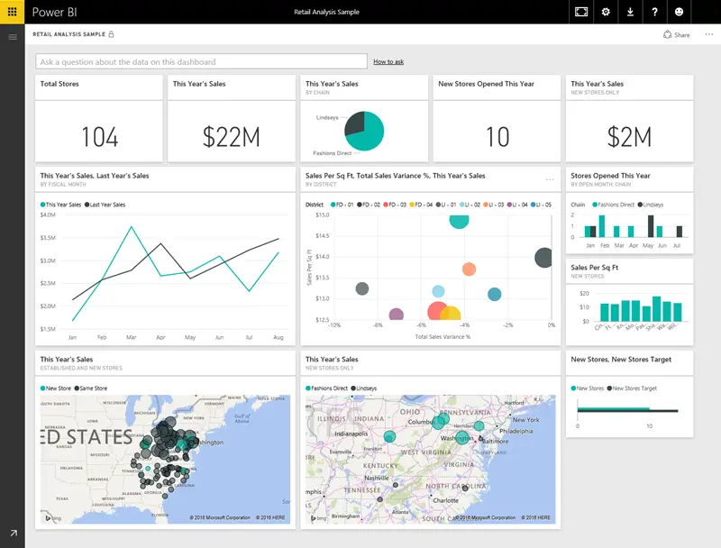

Microsoft Power BI
Microsoft Power BI est une solution de création de rapports complète qui permet de préparer, visualiser, distribuer et gérer des données avec des outils de développement et une plateforme en ligne.
Power BI convient aussi bien aux rapports simples utilisant une seule source de données qu’aux rapports nécessitant une modélisation de données complexe et des thèmes cohérents. Utilisez Power BI pour créer des rapports interactifs visuellement époustouflants qui servent de moteur d’analyse et de décision à des projets de groupe, à des départements ou à des organisations entières.
Power BI est un outil essentiel pour les analystes de données et leur organisation. Toutefois, la compréhension du fonctionnement de Power BI est un atout pour tous les professionnels de données qui souhaitent explorer et présenter des insights sur les données au sein des organisations.
Afin de créer des états avec Power BI, vous devez d’abord comprendre les outils nécessaires. Power BI comporte trois composants principaux :
Power BI Desktop est l’outil de développement utilisé par les analystes de données pour créer des rapports. Le service Power BI permet d’organiser, gérer et distribuer ces rapports. Power BI Mobile permet aux utilisateurs de consulter les rapports sur leurs appareils mobiles.

Voici le flux classique lors de la création d’états avec Power BI :
Le service Power BI permet également de créer des tableaux de bord et des applications regroupant plusieurs rapports pour les utilisateurs.
Les blocs élémentaires de Power BI sont les modèles sémantiques et les visualisations.
Un modèle sémantique se compose de l’ensemble des données, transformations, relations et calculs connectés. Pour suivre le flux de Power BI, vous devez d’abord vous connecter aux données, transformer les données puis créer des relations et des calculs afin de construire un modèle sémantique.
Les données sont nettoyées et transformées à l’aide de l’Éditeur Power Query, puis les relations entre tables et les calculs sont ajoutés afin d’étendre le modèle.
Dans Power BI Desktop, les visualisations (ou visuels) sont ajoutées au canevas pour créer des pages de rapport. Power BI permet de créer facilement des graphiques et tableaux grâce à un système de glisser-déposer.
Les rapports Power BI sont interactifs : les utilisateurs peuvent sélectionner un élément dans un visuel pour voir son impact sur les autres visuels du rapport.

Dans le service Power BI, vous pouvez créer des tableaux de bord après avoir publié un état.
Les tableaux de bord se composent d’une seule page contenant des vignettes issues des visualisations des rapports. Lorsqu’un utilisateur clique sur une vignette, il est redirigé vers le rapport correspondant.
Les tableaux de bord permettent d’avoir une vue générale des indicateurs importants avant d’explorer les rapports plus détaillés.

Les blocs élémentaires de Power BI sont les modèles sémantiques et les visuels. Vous créez le modèle sémantique à l’aide de Power BI Desktop et les rapports à l’aide de visuels.
Dans le service Power BI, vous pouvez distribuer du contenu à vos utilisateurs et créer des tableaux de bord à l’aide des rapports.